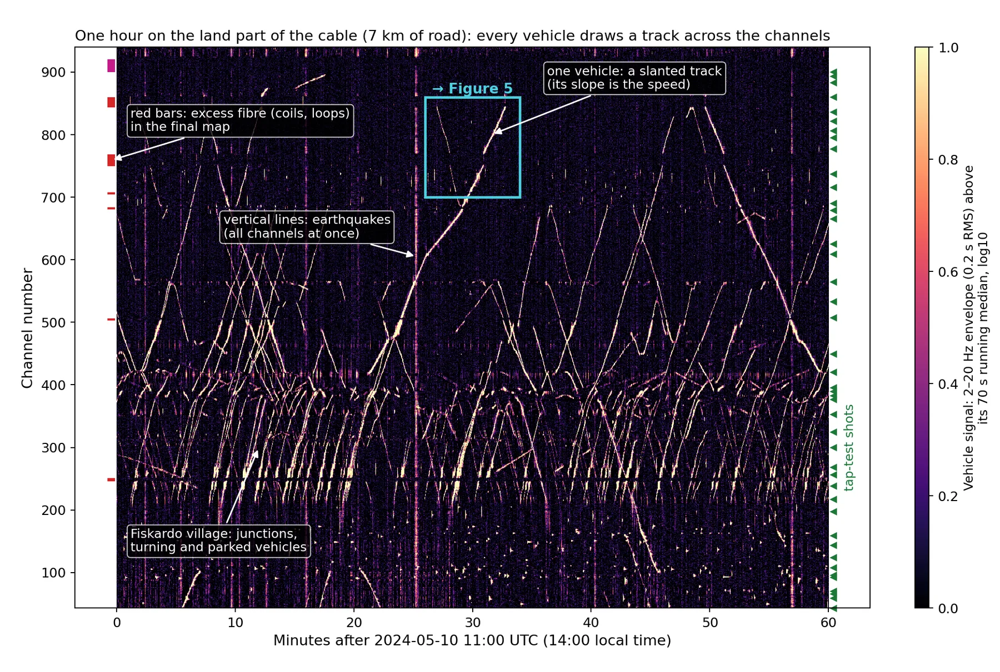
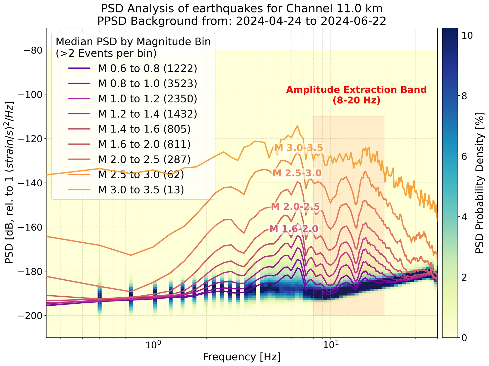
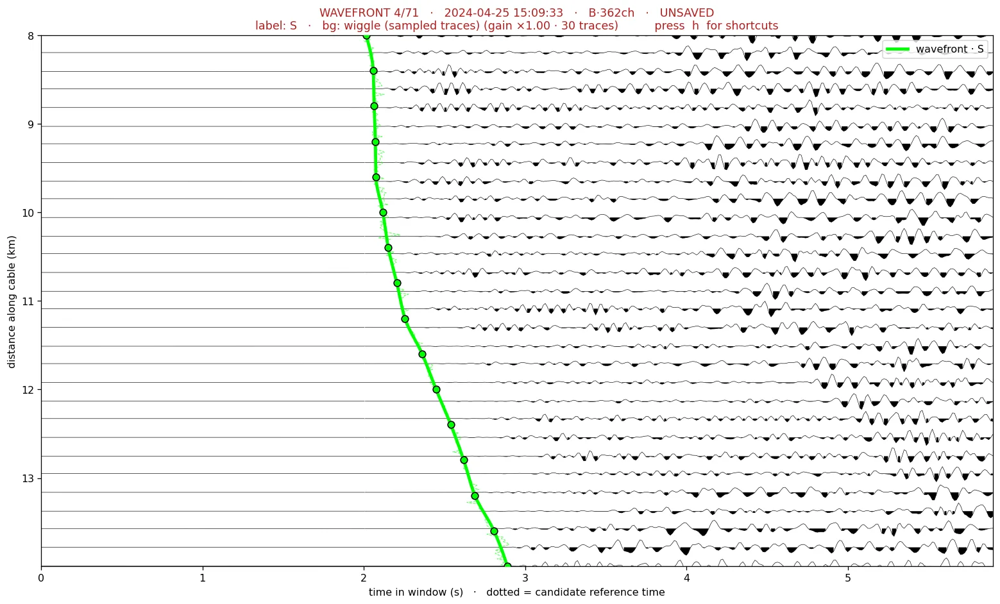
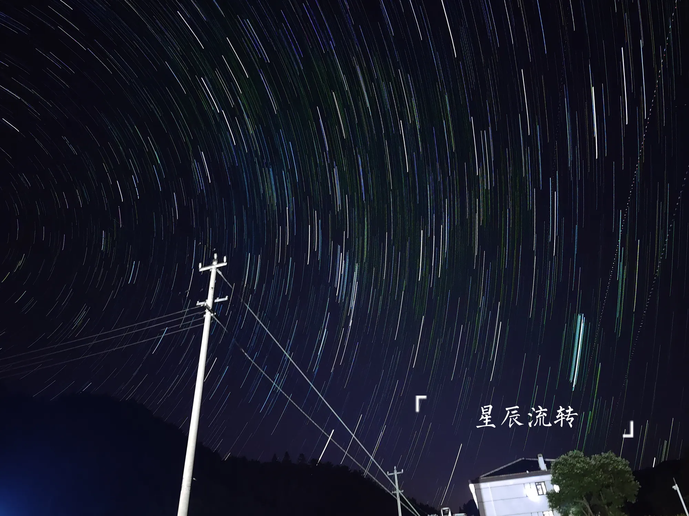
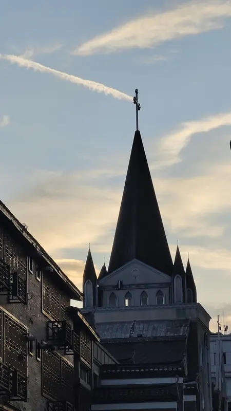
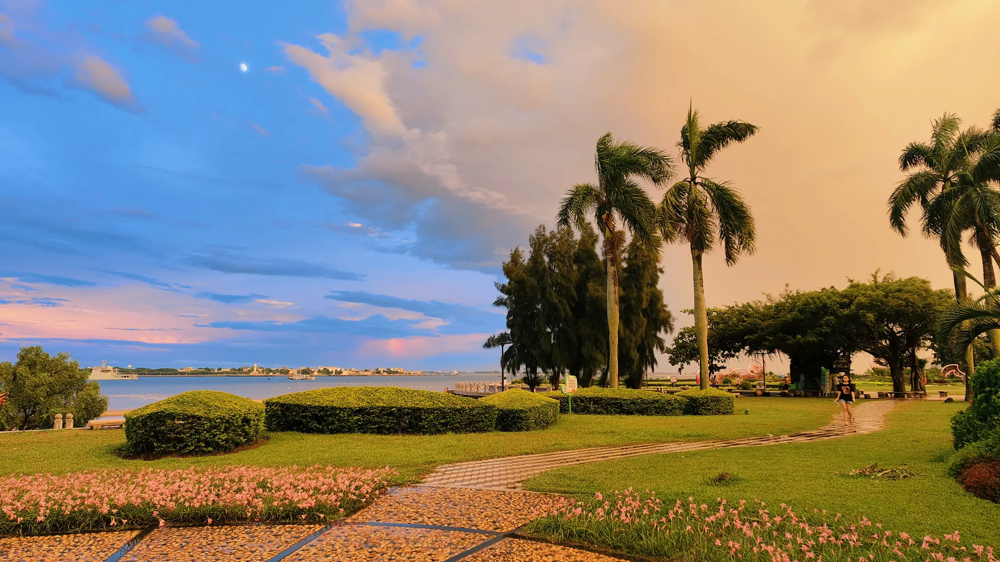
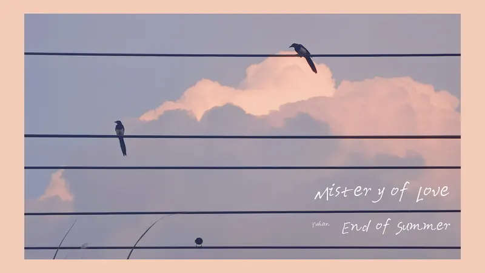

T–01 · Literature
SeismoHub
A self-hosted, local-first literature hub for seismology: paper trackers, AI reading with paragraph-anchored citations, licence-aware PDF harvesting. One FastAPI process, one SQLite file.
GitHubDoctoral student · Seismology & Wave Physics group
Fibre-optic seismology at ETH Zürich.
Playback ×60
Hover over the record to scrub time.Drag along the record to scrub time. ClickTap anywhere on the page for a small earthquake of your own.
The name rides real ground motion: the M 8.8 Kamchatka earthquake of 29 July 2025, 23:24:52 UTC, recorded 8609 km away at station CH.SULZ in Sulz AG, Switzerland. Vertical ground velocity, 0.008–0.4 Hz.
Data: Swiss Seismological Service (SED) at ETH Zürich.
I turn telecom cables into dense seismic arrays: on the seafloor, under cities.
I am a doctoral student in the Seismology & Wave Physics group at ETH Zürich, supervised by Andreas Fichtner. My field is fibre-optic seismology: distributed acoustic sensing (DAS) on cables that were laid for telephone calls and the internet.
So far that means two months of data from a seafloor cable between Kefalonia and Ithaca, a dark fibre under Athens, and the question of how a curved cable filters the waves it records. Around the science I build open tools: a literature hub for seismology, a wavefront picker, a channel-mapping skill and a wave laboratory that runs in the browser.
microearthquakes in two months, found with five templates and one seafloor cable.
The regional catalogue lists 893 events for the same period. The matched filter on the cable finds nearly 20 times as many.
Two dot fields at the same scale: 893 dots for the regional catalogue and 17,325 dots for the matched-filter detections.
The Kefalonia Transform Fault, Ionian Sea, Greece. It hosts repeated M > 6 ruptures every 10–20 years, but land networks resolve its small earthquakes poorly.
Two months of DAS, 24 April to 22 June 2024, on a seafloor telecom cable between Kefalonia and Ithaca.
A matched filter with five template events: stacked cross-correlation, MAD triggering, magnitudes.
Episodic swarms; one cluster holds over 72 % of the detections. The magnitude of completeness drops by about 2 units near the template clusters.
Wang, Y., Meier, M.-A., Bogris, A., Simos, C., Simos, I., Melis, N. S. & Fichtner, A. (2026). Persistent Faulting Activity Along the Kefalonia Transform Fault Revealed by Seafloor DAS. ESS Open Archive. doi:10.22541/essoar.15006791/v1. Code: yuhan-mfdas, yuhan_das_spectra, das_wavefront_picker; archive doi:10.5281/zenodo.20715241.
Same cable, Kefalonia 2024: one integrated fibre measurement compared with the DAS channels beside it, for earthquakes, ocean waves and traffic. Code and data: doi:10.5281/zenodo.20553635.

Five template events, two months of seafloor DAS, 17 325 microearthquakes: nearly 20 times the 893 of the regional catalogue. The detections come in episodic swarms; one cluster holds over 72 % of them.

How the curvature of a cable filters the wavefield it records, and what that means for laying out a deployment.
This started as my 2022 summer project with the group: ambient-noise tomography and site amplification from roadside DAS in Athens. Presented at the AGU Fall Meeting 2022.
The conference abstract on the Kefalonia detections, EGU General Assembly 2025, Vienna.

Hover over a row for a figure. Select a row for the summary. Full list on Google Scholar and ORCID.
1872channels
8.17 mfrom one channel to the next
15.29 kmof fibre: land, sea, land
The interrogator counts its channels along the fibre. Seismology needs them on the ground.
From the interrogator to the beach manhole there are 7.32 km of fibre on 6.44 km of ground. 0.71 km of the difference is spare fibre stored at eight points, in coils of 16 to 172 m. Every channel behind a coil sits further along the fibre than along the road.
I find the coils with three signals: tap tests, earthquake amplitudes and passing vehicles. The result is a channel map with uncertainties.
T–01 · Literature
A self-hosted, local-first literature hub for seismology: paper trackers, AI reading with paragraph-anchored citations, licence-aware PDF harvesting. One FastAPI process, one SQLite file.
GitHubT–02 · Literature
The public, read-only daily snapshot: new seismology and wave-physics papers on one searchable page.
Open the siteT–03 · Literature
Verified, licence-aware full-text PDFs for a reading list, from about twenty open channels.
GitHubT–04 · DAS
Matched-filter earthquake detection for the Kefalonia seafloor cable: templates, stacked cross-correlation, MAD triggering, magnitudes.
GitHubT–05 · DAS
Spectra of seafloor DAS: noise PSD and PPSD, earthquake spectra by magnitude, noise against ERA5 wind and waves.
GitHubT–06 · DAS
STA/LTA wavefront detection and interactive picking on raw DAS waterfalls, with bad-channel rejection.
GitHubT–07 · DAS
A Claude Code skill that finds the excess fibre along a cable and delivers the channel map with uncertainties.
GitHubT–08 · In the browser
Six experiments on one finite-difference solver. They run in your browser; nothing to install.
Open the Wave LabWorkshop · co-organiser
30–31 July 2026
ETH Zürich & online
A workshop on multi-scale tomography of the Earth. Co-organised with Andreas Fichtner, hosted by the Seismology & Wave Physics group.
Workshop site“What is essential is invisible to the eyes.”

01Star trails 星辰流转 02Zhanjiang
02Zhanjiang 03Yaoluoping, Anhui 鹞落坪
03Yaoluoping, Anhui 鹞落坪 04Guilin
04Guilin
05Guilin 06Xiuning, Anhui
06Xiuning, Anhui
07Zhanjiang 08A mountain stream
08A mountain stream 09Chaohu, Anhui
09Chaohu, Anhui
10Birds on wires, a postcard I made 11Guilin
11Guilin 12Dusk
12DuskNight skies, landscapes, postcards. I used to paint, in Chinese ink wash and in oil. Otherwise: travelling and cycling.
Grüezi.
Fibres, earthquakes, tools: write to me.
E-mail on my ETH profile